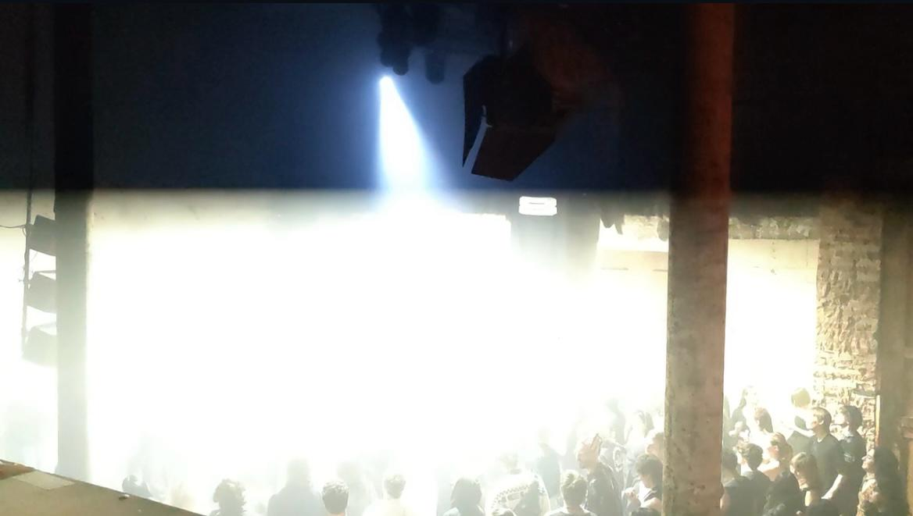
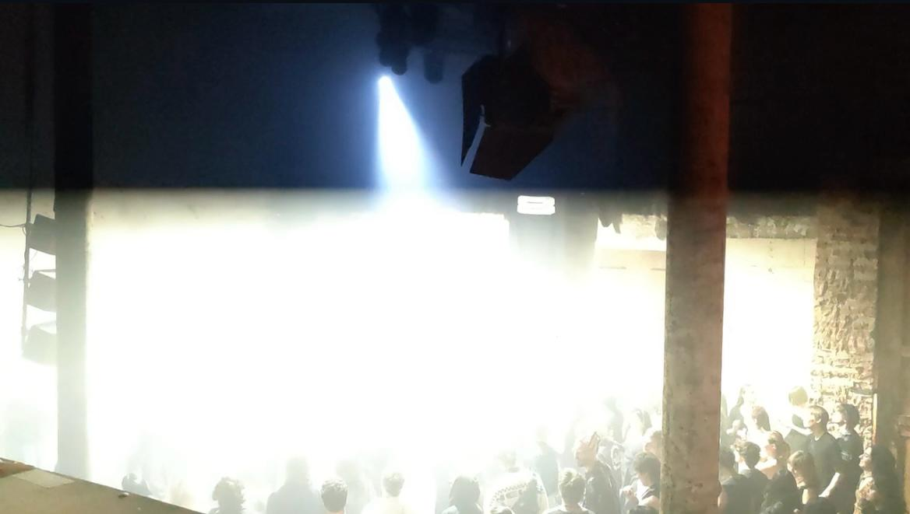
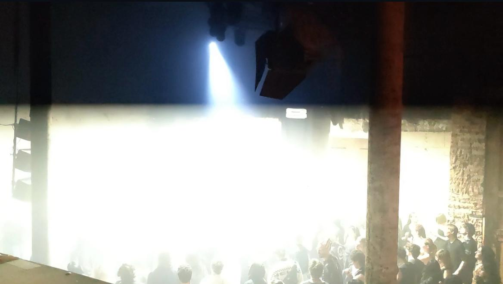
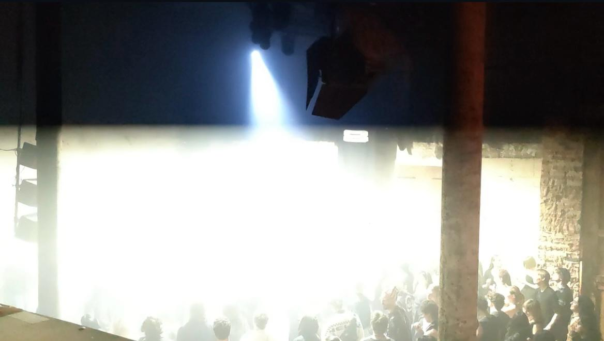

 

GrandMA2 lighting programming, design, and live operation for a multi-stage event at Club8, Berlin. Delivered real-time lighting control across Tanzhalle and Ambienthalle in collaboration with the Norwegian collective Massive Gain and the Berlin-based label Kontext, alongside a curated interactive exhibition.